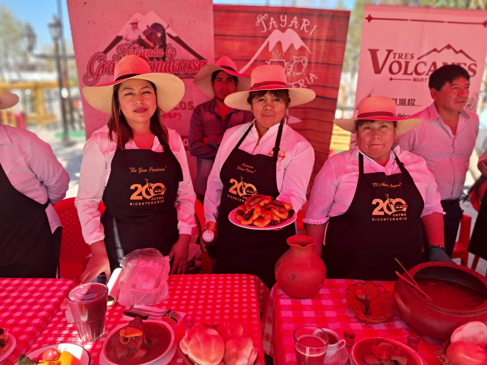

El Corazón Detrás
de Cada Picarón
Una tradición familiar nacida en las alturas, llevada con orgullo en cada receta, cada mañana y cada bocado dorado.

Elena Vargas
Elena creció en una cocina que siempre olía a canela, anís y masa frita caliente. Su madre, Modesta, hacía picarones en cada reunión familiar — cumpleaños, bautizos y la fiestas en Arequipa — y la pequeña Elena nunca se perdió ni una sola hornada.
Después de criar a sus propios hijos y ver que la receta casi desaparecía en el recuerdo, Elena decidió que era hora de compartirla con el mundo. En 2013, instaló su primer puesto en un evento de la comunidad con una freidora prestada y un frasco de miel de higos casera. La fila dio la vuelta a la cuadra antes de las 10 AM.
Gustitos Doña Elena es hoy un lugar querido de la escena gastronómica de Arequipa — pero cada picarón sigue haciéndose a mano, con la misma receta, la misma paciencia y el mismo amor que mi madre enseñó hace décadas.
Escribirle a ElenaHitos y Recuerdos
De una freidora prestada a un lugar emblemático de Arequipa.
El Primer Puesto
Elena instala su primer puesto en un evento de la comunidad con una freidora prestada, tres kilos de camote, zapallo y un frasco de miel de higos. Se agota en dos horas y vuelve el siguiente sábado a un evento de la comunidad con el doble de masa.
Los Buñuelos se Unen a la Familia
Elena amplía el menú con su propia receta de buñuelos — más ligeros, más esponjosos y espolvoreados con azúcar y canela. Nace el Combo Fiesta, que se convierte en el más vendido de los eventos de fin de semana.
Eventos Gastronómicos
Se empieza a participar en eventos gastronomicos de Arequipa. Las filas se vuelven más largas, los turistas descubren el puesto y los locales lo adoptan como un clásico imperdible. Las redes sociales empiezan a correr la voz y las colas crecen cada semana.
Entrando al Mundo Digital
Gustitos Doña Elena lanza su primer sitio web y presencia en redes sociales, facilitando que los clientes encuentren a Elena, exploren el menú y realicen pedidos para eventos y celebraciones privadas.
Cómo los Hacemos
Sin atajos. Sin premezclas. Solo los mismos cuatro pasos que la Abuela Carmen le enseñó a Elena.
Seleccionar y Preparar
Camote y zapallo frescos se compran cada semana en los mercados locales de Arequipa y se asan toda la noche.
Preparar la Masa
Las verduras asadas se machacan y mezclan con harina, levadura y anís para crear una masa viva que reposa por horas.
Freír hasta Dorar
Cada rosca se forma a mano y se fríe en aceite limpio a la temperatura exacta para lograr un exterior crujiente y un interior suave y esponjoso.
Bañar y Servir
Terminados con nuestra miel de higos cocida a fuego lento — higos, canela, clavo de olor y cáscara de naranja hervidos durante cuatro horas.
Las Manos que lo Hacen

Elena Vargas
Fundadora y Chef PrincipalEl corazón y las manos detrás de cada receta. Nunca se ha perdido un sábado en el mercado.

Nathaly Cambeiro
Administración y PedidosLa hija mayor de Elena. Se encarga de los pedidos de catering, eventos y de que la freidora nunca se enfríe.

Sandra
Preparación y AbastecimientoConoce a cada proveedor del Mercado San Camilo por su nombre. Se asegura de que solo el camote más fresco pase la selección.
¿Listo para saborear la tradición?
Explora nuestro menú o encuéntranos en el mercado este fin de semana.